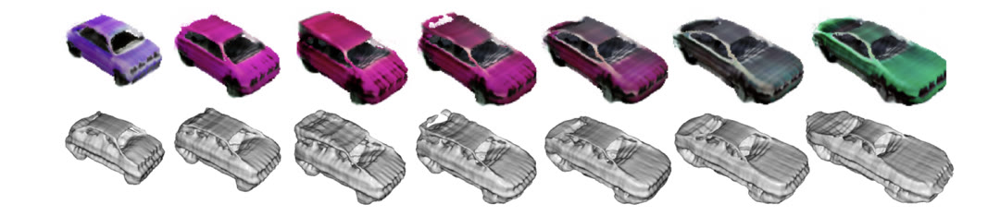

Antoine Schnepf
Researcher · Computer Vision · Deep Learning
Currently seeking Researcher, Research Scientist, or Research Engineer roles in computer vision or other AI-related topics.
About

Based in Paris, I recently completed my PhD, exploring how powerful 2D vision models can improve 3D reconstruction and generation. This work was carried out as a collaboration between Criteo AI Lab and I3S-CNRS.
This work led to five publications, including two at ICLR, one at ICML, and one at TMLR. I'm now looking ahead to the next phase of my career.
Publications
00
SphericalDreamer: Generating Navigable Immersive 3D Worlds with Panorama Fusion
ICML 2026
Project Page
01
Fused-Planes: Why Train a Thousand Tri-Planes When You Can Share?
ICLR 2026
Project Page
02
Bringing NeRFs to the Latent Space: Inverse Graphics Autoencoder
ICLR 2025
Project Page
03
RefinedFields: Radiance Fields Refinement for Planar Scene Representations
TMLR 2025
Project Page
04
3DGEN: A GAN-based Approach for Generating Novel 3D Models from Image Data
NeurIPS Workshop on Machine Learning for Creativity and Design, 2022

* equal contribution
Resume
Education
-
2023 – 2026
Ph.D. in Machine Learning, Université Côte d'Azur & Criteo AI Lab Thesis: "Neural 3D Reconstruction and Generation with 2D Visual Priors" — Advisors: Andrew Comport, Flavian Vasile
-
2021 – 2022
M.Res. MVA — Mathématiques, Vision, Apprentissage, École Normale Supérieure Paris-Saclay Coursework: Deep Learning, Reinforcement Learning, Statistical Learning, Topological Data Analysis, NLP
-
2018 – 2022
M.Sc. Engineering, Major in Mathematics, CentraleSupélec Coursework: Machine Learning, Algorithms, Advanced Probability, Statistics, Stochastic Calculus, Harmonic Analysis
-
2016 – 2018
Classes Préparatoires aux Grandes Écoles — Mathematics & Physics, Lycée Kléber Two-year intensive program preparing the French national engineering entrance exams
Experience
-
Jul 2023 – Present
Ph.D. Researcher, Criteo AI Lab & CNRS / Université Côte d'Azur 3D computer vision: generative modeling, 3D reconstruction, scene representation. First- or co-first-author on four papers. Co-supervised Master's interns and open-sourced code for each publication.
-
2022 – 2023
Research Intern — Generative 3D Computer Vision, Criteo AI Lab Generative 3D modeling with neural radiance fields, adversarial networks, and diffusion models. Internship extended directly into a Ph.D. under the same team.
-
2021
Research Intern — Computer Vision, Schlumberger AI Lab Fine-tuned ResNet-based architectures for industrial vision tasks. GAN-driven data augmentation for image segmentation networks.
-
2020 – 2021
Machine Learning Intern, Aarhus University Integrated a GAN into a citizen-science creativity game; designed Bayesian models to infer player behavior. Optimized a quantum cold-atoms experiment using Gaussian Process regression.